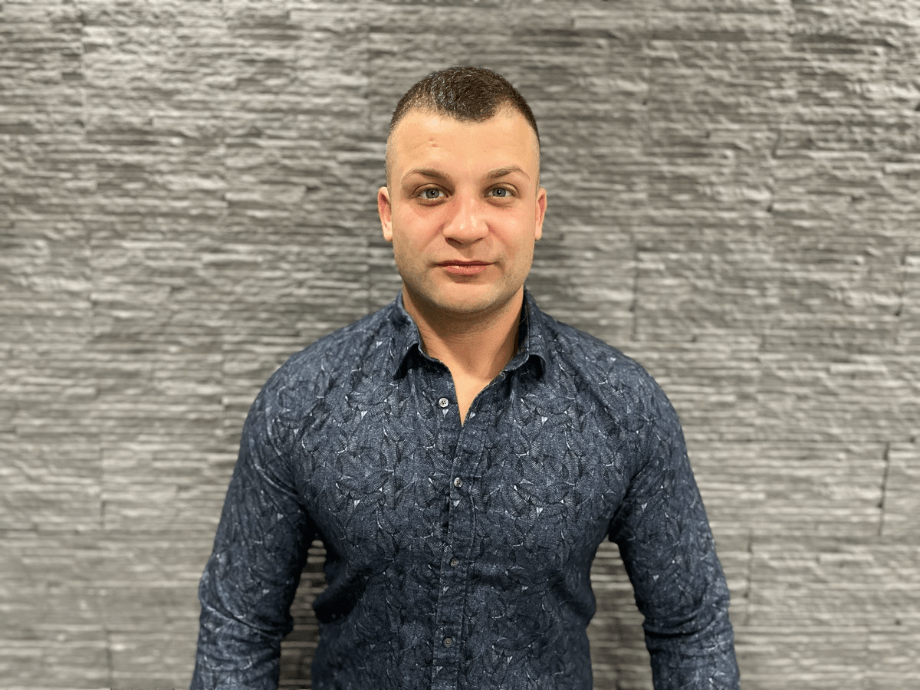

Profile

Edit Profile
Valeri Getsov
Freelancer helping companies to build hybrid mobile apps with
@IonicFramework
73 Following
9 Followers
 {{ tweet.username }}
{{ tweet.date |
date: 'M/d' }}
{{ tweet.text }}
{{ tweet.shareCount }}
{{ tweet.likeCount }}
{{ tweet.username }}
{{ tweet.date |
date: 'M/d' }}
{{ tweet.text }}
{{ tweet.shareCount }}
{{ tweet.likeCount }}